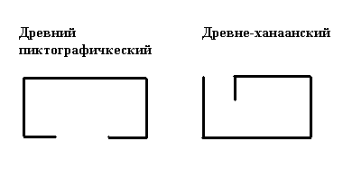
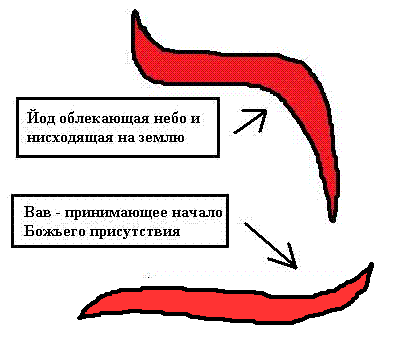
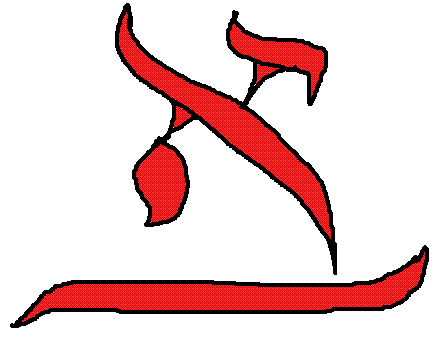

Бет (ב)
Бет — вторая буква еврейского алфавита и первая буква, имеющая твёрдый звук и физически присутствующая в материальном мире. Одна из версий, почему Тора начинается с буквы бет, а не с первой — алеф, указывает на домоустройство материального мира для физического воплощения Божественного начала.
Древняя пиктограмма

Буква бет читается как бет йод тав — בית (слова в иврите читаются справа налево) — такое сочетание символов переводится как «дом», но не в понимании квартиры, а как жилище, обитель или среда обитания. В древнем пиктографическом алфавите она выглядела как вид дома сверху или план. Наверное, у других древних народностей были и другие начертания буквы бет, например в форме вигвама.
Если брать буквенное значение бет, то получается, что жилище — это место заключения завета с Богом. Также слово может означать и семейство, временное пристанище верующего. Например, в Исход 39:22 «бет» переводится словом «темница» — там, где говорится о месте обитания Иосифа.
Современное начертание

В современном иврите буква бет имеет уже более духовное значение. Знак состоит из двух черт: первая — йод, огибая небо, нисходит на землю; а вторая черта — вав — принимает вид фундамента для принятия божественной энергии. Когда мы доберёмся до буквы вав, то поймём её решающее значение во многих символах и почему вав символизирует Иешуа.
По мере изучения каждой буквы нужно снова возвращаться к началу, чтобы глубже окунуться в понимание уже знакомых символов. Итак, вернёмся к нашему дому: в основе еврейского понимании дома лежит явление Божьей силы в жилище вашего рода. Квартира же — это греческое обитание вашего физического тела.
Грамматические свойства
В грамматике буква бет означает предлог «в», означающий «внутри чего-то». Например: «Берешит бара Элохим» — в первых строках Бытия к слову «решит» — начало, подставлен предлог бет, что означает «в начале и внутри происходящего Творец сотворил это небо и эту землю». Все предлоги в иврите пишутся слитно со словом, к которому относится данный предлог.
Первое слово: Ав (אב)

Теперь перейдём к нашему первому слову. Ав — последовательность знаков алеф и бет, переводится как «отец» в более глубоком смысле, нежели биологический основатель рода. Я взял на себя смелость немного модифицировать бет, написав одной буквой всё слово. В данном контексте йод уже несёт в себе всю силу и весь замысел буквы алеф, и тем самым отец — не просто папа, а носитель Божьего замысла и осуществление его в обители своей семьи. Также он является священнослужителем, законодателем и хранителем Торы в бет своего рода.
В современном же греко-римском мышлении отец — просто самец. Согласитесь, что легче понимать буквы уже в контексте понимания Торы, и поэтому пока остановимся на этом и вернёмся к этому, освоив весь алфавит.
Этимология слова «алфавит»
Кстати, если кто ещё не заметил: слово «алфавит» состоит из двух букв — алеф и бет, то есть алефбет.